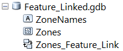
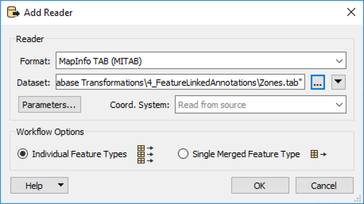
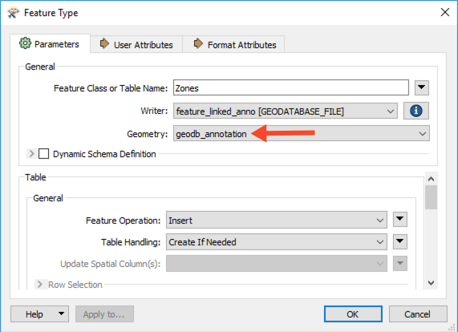

After completing this unit, you’ll be able to:
Although annotations are stored in a separate feature layer in a geodatabase, they can be linked to other features through feature-linked annotations. Feature-linking occurs when there is a relationship between an annotation feature class and some other feature class.
Linking is carried out by defining a relationship through a common attribute. The relationship must already be defined in the geodatabase before writing the data.
How it works in FME: If the relationship for the annotation exists in the geodatabase, then FME will automatically create the annotation and the relationship. The FME geodatabase writer will retrieve the object ID of the new feature and then write the annotation feature and the relationship linking to it. The result is that you only need to write to the primary feature class (Zones in the example below) and the one FME feature contains enough information to write two features: one annotation feature (ZoneNames) and one primary feature (Zones). The annotation created is based on the annotation rules you've created in your target geodatabase in the annotation feature class (ZoneNames)
The Esri Geodatabase (File Geodb) reader/writer used in the following example requires that a licensed version of ArcGIS be available to the user. For more information on required ArcGIS license levels, please see Required ArcGIS License Types for FME Geodatabase Formats.

In the above image, we see a visualization of the Zones TAB file and its accompanying attributes. The ZoneName attribute will provide the values for the feature-linked annotation.
1. Set Up Destination Geodatabase
As mentioned above, feature-linking is carried out by defining a relationship through a common attribute. As such, it is necessary to determine the relationship between your features and annotations in a destination geodatabase prior to writing the data. This process would entail using ArcGIS to create an empty feature class to hold the Zone features, an empty feature-linked annotation class (designed with the required scale, placement properties, text size, etc) to hold the Zone annotations, and a relationship class to link the two together

For purposes here, a geodatabase template file has already been created, and is available from the Resources section on this article. The template file in this example is called `DESTINATION_GDB_TEMPLATE.XML` and will be used during the translation to apply the required schema to our destination geodatabase.
2. Read Source Data - MapInfo TAB (MITAB)
Zoning feature geometry and annotations are read from the TAB source file using the MapInfo TAB (MITAB) reader, providing the features and annotations for the destination feature classes (Zones and ZoneNames) in the Geodatabase referenced in Step 1. The annotation values will be provided from the ZoneName attribute in the source data.
Open a blank workspace in FME Workbench and add a MapInfo TAB (MITAB) reader to the canvas. Browse to the Zones.tab dataset, then click OK to add the reader.

3. Write Geodatabase Features and Feature-Linked Annotation
Now we can write the data out. Add an Esri Geodatabase (File Geodb) writer to the canvas. Browse to a location to save the geodatabase and call it feature_linked_anno.gdb, then open the Parameters.
As mentioned above, rather than create the geodatabase from scratch, we’ll use an ArcGIS XML Workspace Document. This template was created by exporting it from an existing geodatabase. In this case, the template file was exported from a geodatabase containing a feature class, feature-linked annotation class, and relationship class.
In the Parameters, set the Import XML Workspace Document (Schema Only) to DESTINATION_GDB_TEMPLATE.XML which is available from the Resources section. Next, set the Transaction Type to Edit Session. We are dealing with complex features that can only be edited in an Edit Session or Version. Then click OK twice to add the writer.
Once the writer has been added to the canvas, connect it to the Zones reader feature type, then double-click on it to open the parameters. Set the Geometry to geodb_annotation, then click OK.

4. Save and Run Workspace
Now you can go ahead and save the workspace before running it. View the output in ArcMap.
If a template file is not available and a destination geodatabase was created from scratch as mentioned in Step 1, when adding the Esri Geodatabase (File Geodb) writer, be sure to set the Add Feature Type(s) section of the writer dialog to "Import from Dataset". In the Parameters set the Transaction Type to Edit Session, then click OK twice.
When prompted, set the format and select the geodatabase created in Step 1 and click OK. FME will scan the geodatabase to confirm what tables exist. When prompted with a list of classes, select only the feature class that you wish to populate with features.
Once the writer is added, connect the output of the MapInfoTAB reader to the geodatabase writer.
When converting one geodatabase to another, it is also possible to create new feature-linked annotations in the same way as described above. However, in some cases, you may have edited your annotations and you want to preserve those edits. To do this you need to link the source annotations back to the primary feature and set the geodb_<anno> format attributes for the annotation characteristics you want to preserve. Also, in your target geodatabase template, ensure that the annotation does not automatically create on feature insert. To do this you need to edit the ArcGIS annotation properties and uncheck "Create annotation when features are added". Then export that to your Esri XML Workspace Document that you'll use for your geodatabase template.
In this example, the source geodatabase has the feature class Zones and feature-linked annotation ZoneNames.